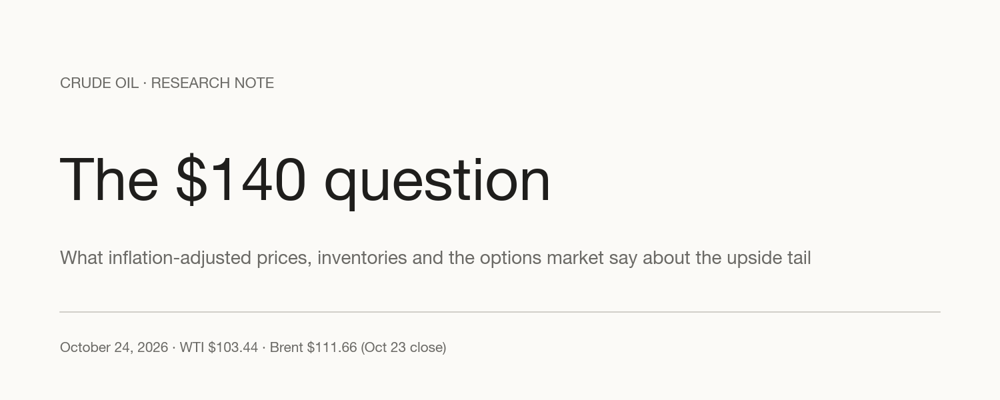
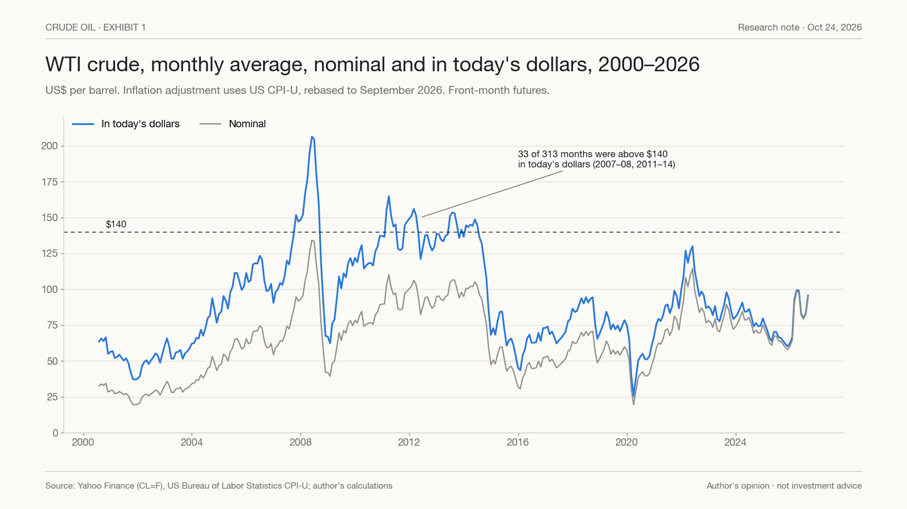
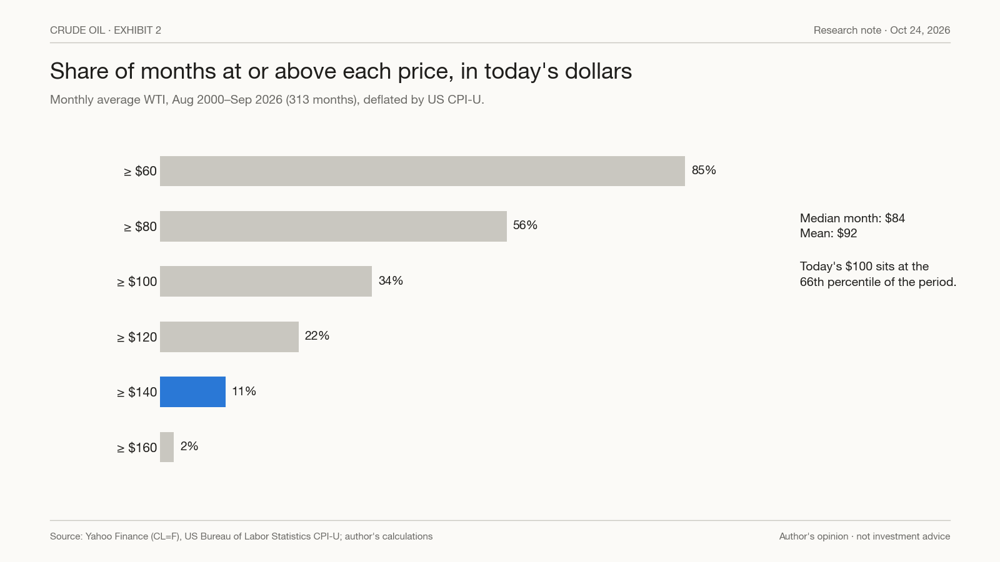
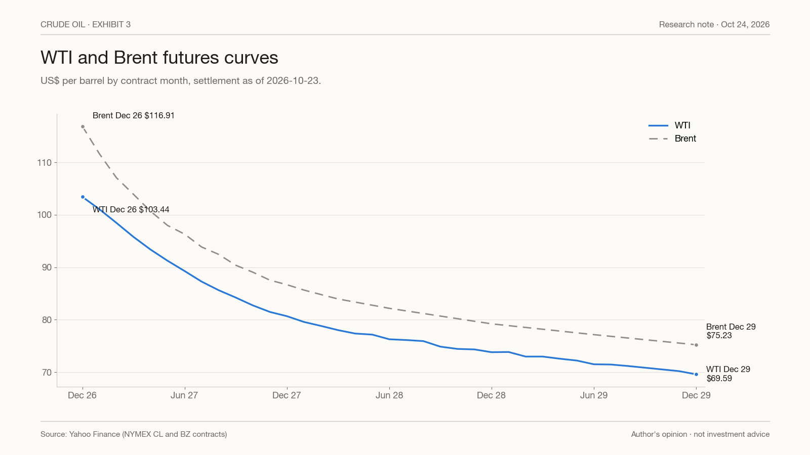
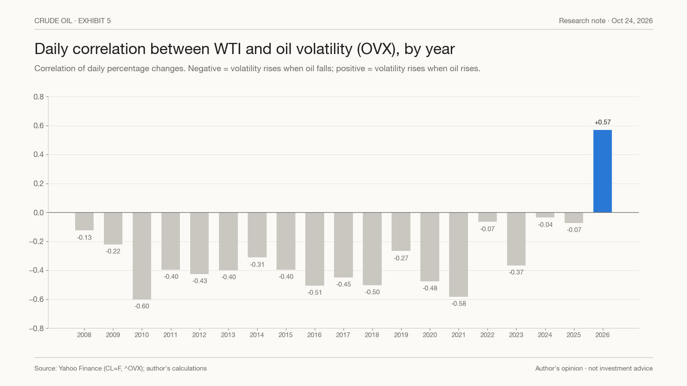
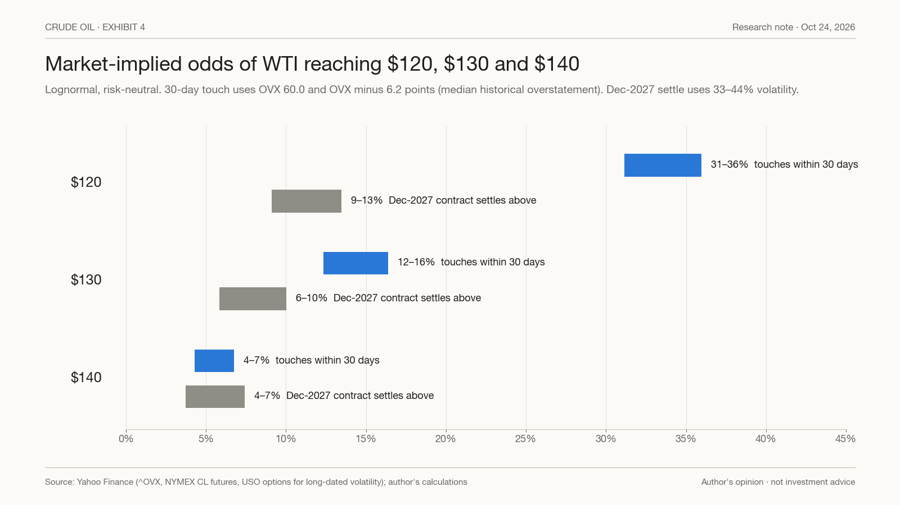
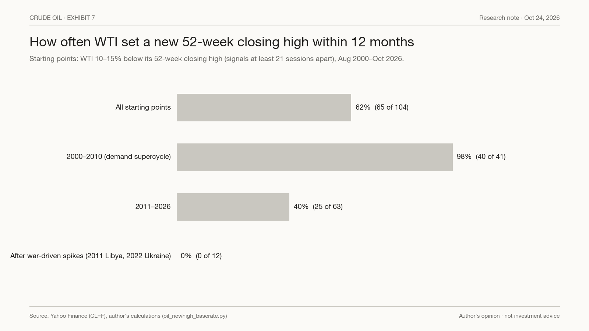
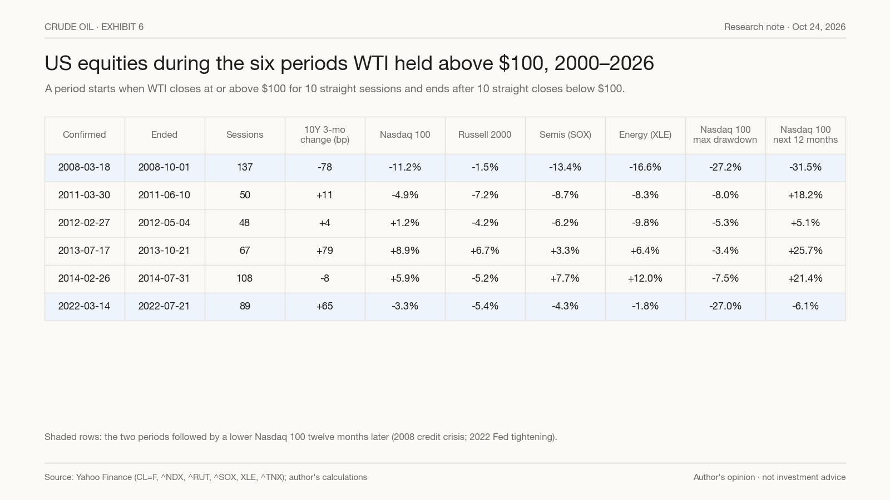
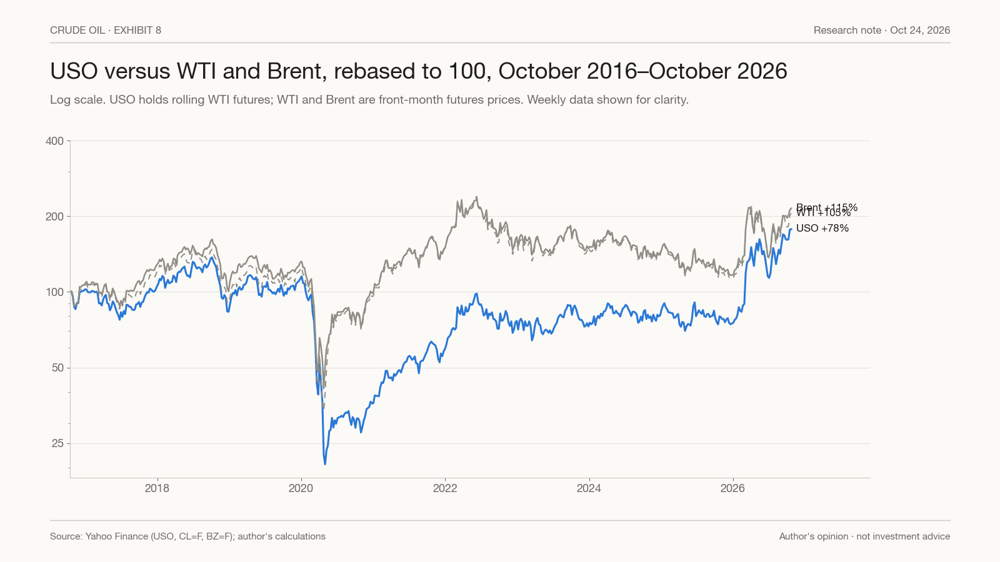

The Market Prices a 5% Chance of $140 Oil. We Think That Is Too Low.
WTI settled at $103.44 on October 23. After inflation, $140 oil is roughly where the market spent much of 2011–14, not a fantasy number. The spare capacity that capped earlier spikes is thinner than it was before the war, and inventories are falling. The futures curve still says $81 a year from now. This note sets out why we think the upside tail is underpriced, what the market itself is pricing, the evidence that cuts against us, and what would prove us wrong.

Contents · 13 sections
- The short version
- $100 in 2026 is $65 in 2008 money
- Where $140 sits in history: 11% of months since 2000
- In a supply shock, the price stops rising only when demand breaks
- The buffers are thinner than they were before the war
- The futures curve says $81 a year from now. We do not take it at face value
- WTI or Brent: which $140?
- The options market already leans toward the upside, but still prices $140 at about 5%
- The evidence against us: war spikes have been 0 for 12 at making new highs
- What $140 oil would mean for stocks
- Why USO is a poor way to own this view
- What would prove us right, and what would prove us wrong
- Bottom line
The short version#
- Our view. We think WTI has a materially higher chance of trading at $140 before the end of 2027 than the roughly 5% the options market implies. This is a view about the size of the upside tail. It is not a claim that $140 is the most likely outcome.
- $140 is not an extreme number once you adjust for inflation. $100 today buys what $65 bought in July 2008. The $100 oil of 2011–14 is about $147 in today's money. The June 2022 peak of $122 is about $139. Since August 2000, WTI's monthly average has been above today's $140 in real terms in 33 of 313 months.
- The buffers are thinner. Nearly all of OPEC's spare capacity sits around the Gulf, and the EIA now puts OPEC spare capacity at about 0.5 million barrels a day (mb/d) this year after the UAE left the group. Global observed inventories fell in September, and US commercial crude stocks fell 11.7 million barrels in the two weeks to October 16. The IEA says attacks on energy infrastructure and tankers are escalating.
- What the market prices. Options imply a 4–7% chance that WTI touches $140 in the next 30 days and a 4–7% chance that the December 2027 contract settles above $140. The futures curve slopes from $103.44 (December 2026) to $80.68 (December 2027).
- The evidence against us. After the war-driven spikes of 2011 and 2022, WTI never reclaimed its spike high within 12 months (0 of 12 starting points). This year's closing high of $112.95 (April 7) still stands, and WTI has not closed above $100 for more than seven sessions in a row in 2026.
- What would change our mind. A flattening curve, several weeks of US inventory builds, oil volatility starting to rise on down days again, or WTI failing to trade above $112.95 by the end of the first quarter of 2027.
$100 in 2026 is $65 in 2008 money#
Most investors carry a mental map of oil prices drawn in nominal dollars. On that map, $100 is "high", $120 is "crisis" and $140 belongs to July 2008. The map is out of date. US consumer prices (CPI-U) rose 53% between July 2008 and September 2026, so the same nominal price now represents a much smaller share of household budgets and corporate costs.
Translated into September 2026 dollars using CPI-U:
- The July 2008 closing high of $145.29 is about $223.
- A $100 barrel in 2012, the middle of the 2011–14 plateau, is about $147.
- The June 2022 peak of $122.11 is about $139.
- Today's $103.44 is about $67.50 in July 2008 dollars.

Exhibit 1 shows the gap between the two series. The grey line is the price on the screen. The blue line is the same price expressed in today's dollars. In nominal terms, WTI has closed above $140 on only nine trading days in its history, between June 27 and July 14, 2008, and no month has averaged above $140 (the June 2008 average was $134). In real terms, it spent long stretches above that level in 2008 and again in 2011–14. The US economy kept expanding through 2011–14 with oil at a real price that, in today's money, sits close to $140.
The point is narrow but important. The level at which oil started to break demand in past cycles is well above where it trades today. When commentators say $140 would be "unprecedented", they are reading the grey line. The blue line says the economy has lived there before.
We want to be careful not to overstate this. Adjusting for inflation does not make $100 oil cheap in absolute terms. Over the full period since August 2000, today's $100 sits at the 66th percentile of monthly real prices. The median month was $84 in today's dollars and the mean was $92. Oil is not cheap. It is simply not as expensive, relative to the economy's past tolerance, as the nominal figure suggests.
Where $140 sits in history: 11% of months since 2000#

Exhibit 2 counts how often the monthly average of WTI, in today's dollars, was at or above a given level between August 2000 and September 2026:
- At or above $60: 85% of months.
- At or above $80: 56%.
- At or above $100: 34%.
- At or above $120: 22%.
- At or above $140: 11%.
- At or above $160: 2%.
Those 33 months above $140 fall in 2007, 2008 and 2011–14. The highest monthly average in today's dollars was June 2008, at about $206.
So $140 sits at the edge of the historical range, not outside it. A move there would put WTI in the top decile of real prices since 2000: rare, but repeatedly observed. $160 and above is genuinely extreme; it has happened in only 2% of months, all in 2008. Our case is about $140, not about a replay of 2008.
In a supply shock, the price stops rising only when demand breaks#
The reason the real-price threshold matters is the way oil markets clear during a supply shock. In the short run, both supply and demand respond slowly to price. When a large volume of supply disappears, the price has to rise until enough demand is destroyed, or until enough supply arrives from somewhere else. The ceiling in a supply shock is therefore set by the price at which consumers and businesses actually cut back.
Fitch put numbers on this in May. In its analysis of a five-month closure of the Strait of Hormuz, balancing the market would require about 5 mb/d of demand destruction, roughly 5% of global demand. In the short run, demand gives way only slowly, so cutting a few percent of it takes a very large move in price.
History gives two reference points for where that pressure became intolerable:
- 2022. WTI peaked at $122.11 in June. In today's dollars that is about $139. Demand destruction, a strong dollar and the fastest Federal Reserve tightening in four decades capped the move.
- 2008. WTI peaked at $145.29 in July, about $223 in today's dollars. The cap came from a global recession.
Our inference is this: if supply were disrupted again on a scale similar to March and April of this year, the clearing price would have to rise into the zone where demand gave way in 2022, around $140 in today's money, or higher. This is our reasoning, not a market forecast, and we set out the evidence against it below.
It is worth recalling what happened in the spring. According to the IEA's March report, Gulf producers cut combined oil output by at least 10 mb/d, including about 8 mb/d of crude, and around 3 mb/d of refining capacity was shut. The EIA estimated that crude production losses in Iraq, Saudi Arabia, Kuwait, the UAE, Qatar and Bahrain reached 7.5 mb/d in March and 9.1 mb/d in April. WTI peaked at $119.48 intraday on March 9 and closed at a 2026 high of $112.95 on April 7.
That is an argument against us as well as for us. One of the largest supply losses on record took WTI to "only" $119 intraday. The system absorbed the shock through inventories, bypass pipelines, demand destruction and higher exports from elsewhere. Our case rests on the view that several of those buffers have since been used up or have become targets themselves.
The buffers are thinner than they were before the war#
Spare capacity. Before the war, Fitch estimated OPEC's spare capacity at 3.6 mb/d. Almost all of it sits around the Persian Gulf; as CME's PVM commentary noted in March, with the Strait of Hormuz closed that capacity was effectively stranded. The UAE then withdrew from OPEC and OPEC+ on May 1. Rystad Energy estimates the UAE held about 1.54 mb/d of spare capacity, roughly a quarter of OPEC+'s total of nearly 6 mb/d as of February. Following the exit, the EIA cut its estimate of OPEC spare capacity in 2027 to about 2.5 mb/d from 3.8 mb/d, and puts this year's figure at about 0.5 mb/d.
Bypass routes. Fitch estimated that Saudi and UAE pipelines that bypass Hormuz had about 4.5 mb/d of spare capacity before the conflict. Those routes are now part of the target set. In its October Short-Term Energy Outlook, the EIA cited attacks on Saudi Arabia's East-West pipeline, one of the main bypass routes, as a reason for raising its fourth-quarter Brent forecast.
Inventories. The IEA's October Oil Market Report says global observed inventories fell by 10 million barrels in September. On-land stocks fell by 113 million barrels, with most of the decline offset by oil on water, which reflects longer voyages rather than oil available to refiners. The IEA expects the market to stay in deficit through the end of the year. The EIA estimates global stocks fell by 1.9 mb/d in the third quarter and will fall by a further 0.7 mb/d in the fourth. In the US, commercial crude inventories fell 8.6 million barrels in the week to October 9 and another 3.1 million barrels in the week to October 16, to 412.5 million barrels, about 3% below the five-year average, according to EIA weekly data.
Transport and products. The IEA reports record tanker rates. The EIA describes diesel markets as extremely tight.
Forecast revisions. Forecasters have been revising up, not down. In May, Fitch assumed the strait would begin reopening around July and that Brent would fall to about $70 by September. Brent's December contract settled at $116.91 on October 23. In October, the EIA raised its fourth-quarter Brent forecast by $14 to $105 a barrel.
None of this guarantees a new spike. It does mean that a second disruption would hit a system with less spare capacity, lower inventories and more vulnerable bypass routes than in March.
The futures curve says $81 a year from now. We do not take it at face value#

Exhibit 3 shows the WTI and Brent futures curves as of the October 23 settlement. The curve is in steep backwardation: near-dated contracts trade well above later ones.
- WTI: December 2026 $103.44, March 2027 $95.80, June 2027 $89.29, December 2027 $80.68, December 2029 $69.59.
- Brent: December 2026 $116.91, June 2027 $96.32, December 2027 $86.68, December 2029 $75.23.
- The Brent–WTI spread for December 2026 delivery is $13.47, wide by recent standards. Seaborne crude, which is exposed to the Gulf, is carrying a premium over landlocked US crude.
The EIA's base case is similar to the curve. It expects Middle East production to return to pre-conflict levels by the end of the second quarter of 2027, Brent to average about $87 in that quarter, and Brent to average about $84 for 2027, assuming convoys and workarounds keep Gulf exports moving. The EIA itself flags attacks on energy infrastructure as the main risk to that path.
Why do we not take the curve at face value?
- Backwardation describes scarcity today, not prices tomorrow. A steep curve means buyers pay up for oil now and the market rewards anyone who can deliver barrels immediately. It does not mean the market has forecast the decline. A widely cited 2010 study by Alquist and Kilian found that oil futures prices have not been better predictors of future spot prices than simply assuming prices stay where they are.
- The normalization date keeps moving. In May, the consensus assumption was a reopening around July and Brent around $70 by September. The curve's path to $81 relies on the same type of assumption, pushed out by several quarters.
- The curve embeds a premium for bearing risk. Producers who hedge future output sell forward contracts and accept a discount to do so. Part of the slope is that discount, not a forecast.
We do not dismiss the curve. It is the market's central path, and it says that if the shock fades as the EIA expects, WTI falls about 22% over the next 14 months. Our disagreement is about the tail, not the centre.
WTI or Brent: which $140?#
This note is about WTI because it is the contract most US investors trade and the one behind USO. Brent, the seaborne benchmark, is closer to the Gulf risk and already higher. On October 23, Brent's December contract settled at $116.91, so reaching $140 would take a 20% rise. For WTI, at $103.44, the same level is 35% away. If the December Brent–WTI spread stayed at $13.47, WTI at $140 would correspond to Brent at about $153. A narrower spread would mean a smaller move in Brent; a wider one, as in a further escalation in the Gulf, would mean Brent leads and WTI lags.
That distinction matters for anyone translating this note into views on other markets. Fuel prices outside the US, Asian refiners' costs and the currencies of oil importers follow Brent more closely than WTI. A $140 WTI outcome is, in practice, a Brent outcome above $150, which is a larger shock for importing countries than the headline number suggests.
The options market already leans toward the upside, but still prices $140 at about 5%#
The CBOE crude oil volatility index (OVX) closed at 60.0 on October 23, the 93rd percentile of its history since 2007. Implied volatility on its own does not tell you direction. Two other measures do.

Volatility now rises when oil rises. Exhibit 5 shows the daily correlation between changes in WTI and changes in OVX, by year. From 2008 to 2025 it was negative every year, ranging from −0.04 to −0.60. In those years, oil volatility rose when prices fell: the market's main fear was a demand collapse. In 2026 the correlation is +0.57, the first positive year in the series. Volatility rises when prices rise. The market is paying for protection against supply spikes.
Upside options cost more than downside options. On October 16, out-of-the-money calls on USO with November expiry traded at an implied volatility of 50.8%, against 46.2% for equally distant puts, a premium of 4.6 points.

Exhibit 4 converts those prices into probabilities. We use a standard lognormal model, which treats prices as random with a constant volatility and should be read as a rough guide.
- $120: a 31–36% chance that WTI touches $120 within 30 days, and a 9–13% chance that the December 2027 contract settles above $120.
- $130: 12–16% within 30 days; 6–10% for December 2027.
- $140: 4–7% within 30 days; 4–7% for December 2027.
Three caveats apply. First, these are "risk-neutral" probabilities: they include the premium investors pay for protection, so they are not pure forecasts. Second, OVX has overstated the volatility that followed in about 78% of cases since 2007, by a median of 6.2 points; the low end of each 30-day range adjusts for that. Third, the chance of touching a level at some point over the next year is higher than the chance of settling above it on one date, at most about double under a standard model. For the December 2027 estimate, we use a volatility range of 33–44%: the upper end is the implied volatility on long-dated USO options in mid-October, and the lower end allows for the fact that far-dated contracts move less than the front month.
Where we disagree. We think the $140 tail deserves more weight than the roughly 5% priced for the next 12–14 months. Our reasons are the thinner buffers described above, the escalation in attacks reported by the IEA, and the real-price argument: a supply shock does not have to stop at the nominal levels that feel "high", because the economy's tolerance is higher in real terms than it was in 2008, 2011–14 or 2022.
Our subjective scenario weights to the end of 2027 are:
- Re-escalation (WTI trades at $140 or above at some point): 20%. Further damage to Gulf export or bypass infrastructure, or a renewed disruption at Hormuz, while inventories are already drawn down.
- High plateau (WTI mostly $90–120): 45%. Attacks continue but exports keep flowing; the deficit narrows slowly; the curve stays backwardated.
- Normalization (WTI $70–85): 30%. Ceasefire or effective protection of shipping; Gulf output recovers on the EIA's timetable.
- Demand shock (WTI below $70): 5%. A recession or financial accident, possibly triggered by high energy prices and rising rates.
These weights are our judgment, not a model output. The point of writing them down is to make the view testable.
The evidence against us: war spikes have been 0 for 12 at making new highs#

Exhibit 7 measures how often WTI set a new 52-week closing high within 12 months of sitting 10–15% below its previous high, which is where it has been for most of the past six months.
- All starting points since 2000: 62% (65 of 104).
- 2000–2010, the demand-driven supercycle: 98% (40 of 41).
- 2011–2026: 40% (25 of 63).
- After the war-driven spikes of 2011 (Libya) and 2022 (Russia–Ukraine): 0% (0 of 12).
Other geopolitical episodes are mixed: after the 2012 Iran sanctions premium, 3 of 5 starting points led to a new high within a year; after the 2013 Syria scare, 0 of 8 did. The closest analogues to 2026 are supply shocks caused by war, and in those the spike high was not revisited within a year.
The current price action is consistent with that pattern so far. This year's closing high of $112.95 was set on April 7 and has not been reclaimed in six and a half months. In 2026 WTI closed at or above $100 on 27 sessions through October 22, but never on more than seven in a row. It settled at $103.44 on October 23.
Two further points cut against us. The futures curve and the EIA both point to normalization in 2027, and they may be right. And the March–April shock, one of the largest supply losses on record, produced an intraday high of $119.48, not $140. Our argument is that the next shock would land on a weaker system. The counter-argument is that the system has already shown more flexibility than headline numbers suggested.
We take these base rates seriously. That is why our call is about an underpriced tail, not a base case.
What $140 oil would mean for stocks#

Exhibit 6 looks at US equities during the six periods since 2000 when WTI held above $100. We date a period from the 10th consecutive close at or above $100 to the point where WTI has closed below $100 for 10 consecutive sessions.
Three patterns stand out:
- The direction of the broad market was not set by oil. The Nasdaq 100 rose in three of the six periods and fell in three. Twelve months after each period began, it was higher in four of six. The two exceptions were 2008, during the credit crisis, and 2022, when the Federal Reserve was raising rates aggressively. In both, the Nasdaq 100 fell about 27% from its peak during the high-oil period. In the other four, the maximum drawdown was 3–8%.
- Smaller and more cyclical companies suffered most. The Russell 2000 fell in five of the six periods and the Philadelphia semiconductor index in four. Measured day by day, when WTI was at or above $100, the S&P 500 returned −2.3% annualised against +9.6% on other days; the Russell 2000 0% against +10.9%; semiconductors +5.8% against +17.7%; and the Nasdaq 100 +8.6% against +12.2%. These days are clustered in a few periods, so the effective sample is six episodes, not hundreds of days.
- Energy stocks mostly fell once oil was already above $100. The energy sector ETF XLE fell in four of the six periods, and on days when WTI was at or above $100 it returned −24.5% annualised, against +17.4% on other days. The gains in energy equities came on the way up, not at the top.
What separated the good and bad outcomes was monetary policy, not the size of the bond-market move alone. In July 2013, the 10-year Treasury yield had risen 79 basis points in three months, but the Fed was still buying bonds and holding rates near zero; the Nasdaq 100 rose 26% over the following year. In March 2022, the 10-year yield had risen 65 basis points and the Fed began a cycle of rapid increases; the Nasdaq 100 fell 27% from its peak during the high-oil period.
Today's configuration has elements of 2022. The Fed raised rates on September 17, the first increase of this cycle. The 10-year yield closed at 4.99% on October 23. In past cycles, the first Fed increase was followed by a weaker Nasdaq 100 in the short run: it was lower three months later in four of five cycles since 1994 (−7%, +4%, −7%, −5% and −17%), and higher 12 months later in three of five (+6%, +64%, −1%, +6% and −10%). Since 1990, the Nasdaq 100 has been higher 12 months later 84% of the time from any starting day, with a median gain of 19%.
The relationship between oil and stocks has also changed this year. The daily correlation between WTI and the S&P 500 is −0.43 in 2026 through October 22, against figures close to zero in 2022–2024 and +0.25 in 2025. For the Nasdaq 100 it is −0.34, and for the Russell 2000 −0.43. Days when oil rises have been days when stocks fall. Over the month to October 22, WTI rose from $94.6 to $99.5 while the Nasdaq 100 fell 5.8%, the semiconductor index fell 15.4% and XLE rose 9.4%.
For equity investors, three conditions together would mark a 2022-style setting: WTI closing at or above $100 for ten straight sessions, the 10-year yield rising more than 60 basis points over three months, and the 10-year yield holding above 5%. As of October 23, none of the three is in place, though the 10-year yield is within one basis point of 5%.
Why USO is a poor way to own this view#

The United States Oil Fund (USO) is the most popular way to buy oil in a brokerage account. It is a poor instrument for a spike thesis, for reasons that have nothing to do with the direction of oil.
USO does not own oil. It owns WTI futures contracts and sells each one before expiry to buy the next. When the curve is in backwardation, as now, each roll sells a more expensive contract and buys a cheaper one, which adds to returns if prices stay put. When the curve is in contango, the roll costs money. Exhibit 8 shows the result:
- Ten years to October 23: USO +85%, WTI front-month futures +105%, Brent +115%.
- Five years to October 23: USO +192%, WTI +23%, Brent +31%. Nearly all of that gap comes from the persistent backwardation since 2021.
- Since USO's launch in April 2006 (to October 22): USO −70%, WTI +45%. USO suffered drawdowns of 81% (2008–09), 80% (2014–16) and 87% (2018–20).
Holding USO for a year is roughly equivalent to buying WTI for delivery about a year from now at around $81. You make money if WTI in a year is above roughly that level, whether or not it ever touches $140, and you lose money if prices follow the curve down and the backwardation disappears with them. A thesis about a spike is a thesis about the path, not the end point.
Our own tests of USO point the same way. Since 2006, buying USO at month-end when the curve was in backwardation produced a positive 12-month return 36% of the time, against 47% for all month-ends. When backwardation coincided with a three-month rally of more than 20%, as it does today, the following 12 months were positive in one case out of six, with a median return of −22%. Backwardation tends to be deepest near price peaks, and when the shortage eases, spot prices and roll income fall together.
If we wanted to express this view, the principles we would follow are general ones: use instruments with a defined maximum loss rather than an open-ended position; size the position as a tail bet, small enough that being wrong does no lasting damage; avoid leverage; and write the exit conditions down before entering. None of this is a recommendation to buy or sell any security.
What would prove us right, and what would prove us wrong#
We prefer views that can be checked. The thresholds below are our own choices. Readings are as of the October 23 settlement unless noted.
Signals that would support the $140 case
- WTI closes at or above $100 for 10 consecutive sessions, for the first time in 2026. Current run: one session.
- The WTI December 2026–March 2027 spread widens beyond $10. Now: $7.64.
- The Brent–WTI spread for December delivery widens beyond $15. Now: $13.47.
- US commercial crude stocks keep falling. Latest reading: 412.5 million barrels in the week to October 16.
- Further attacks on Gulf export terminals, bypass pipelines or tankers, as reported by the IEA or the EIA.
- The correlation between oil and oil volatility stays positive. Now: +0.57 for 2026.
Signals that would undermine it
- The December 2026–March 2027 spread narrows below $3, which would mean the shortage is easing.
- Three or more consecutive weekly builds in US commercial crude stocks.
- The Brent–WTI spread narrows below $8, which would mean the seaborne risk premium is fading.
- The oil–volatility correlation turns negative, which would mean the market fears demand more than supply.
- Verifiable de-escalation in the Gulf, such as sustained protection of shipping and repairs to damaged infrastructure.
- WTI closes below $90 for 10 consecutive sessions.
- A time limit: if WTI has not traded above this year's closing high of $112.95 by March 31, 2027, we will treat the thesis as failing and say so.
Bottom line#
The futures curve, the EIA and the historical record all say the most likely path is lower prices in 2027. We do not argue with that central case. We argue with the size of the tail.
$140 oil sounds extreme because we remember it as a 2008 number. In today's dollars, it is roughly where the market traded for long stretches of 2011–14, and the level at which demand gave way in 2022. Spare capacity is thinner than before the war, inventories are falling, bypass routes are under attack, and the options market already shows that investors fear spikes more than collapses. Against that background, a 4–7% probability for $140 looks low to us.
Being early and being wrong look the same for a long time. That is why we have written down the signals, the thresholds and a date. If the curve flattens, inventories build and WTI fails to reclaim $112.95 by the end of March, we were wrong, and we will say so.
Disclaimer. This note reflects the author's opinions as of October 24, 2026. It is not investment advice or a recommendation to buy or sell any security. Prices are October 23, 2026 settlements unless stated otherwise. Probabilities derived from options are risk-neutral, include risk premia and are not forecasts. Scenario weights are subjective. Historical patterns may not repeat.
Sources
- Prices, futures curves, volatility and index data: Yahoo Finance (CL=F, BZ=F, NYMEX CL and BZ contracts, ^OVX, USO, ^NDX, ^GSPC, ^RUT, ^SOX, XLE, ^TNX); author's calculations.
- US consumer prices: US Bureau of Labor Statistics, CPI-U (series CUUR0000SA0), https://www.bls.gov/cpi/
- IEA, Oil Market Report, October 2026: https://www.iea.org/reports/oil-market-report-october-2026
- EIA, Short-Term Energy Outlook, October 2026: https://www.eia.gov/outlooks/steo/pdf/steo_full.pdf and https://www.eia.gov/pressroom/releases/press593.php
- IEA March estimate of Gulf output losses, as reported by Argus Media: https://www.argusmedia.com/pt/news-and-insights/latest-market-news/2800022-production-shutdowns-in-mideast-gulf-hit-10mn-b-d-iea and Argaam: https://www.argaam.com/en/article/articledetail/id/1887483
- EIA estimate of Gulf crude production losses, as reported by Bloomberg, April 7, 2026: https://www.bloomberg.com/news/articles/2026-04-07/mideast-crude-output-seen-dropping-by-9-million-barrels-a-day
- CME Group, WTI Insights by PVM, March 21, 2026: https://www.cmegroup.com/news/2026/wti-insights-by-pvm-2026-03-21.html
- Fitch Ratings price assumptions and Hormuz analysis, as reported by bne IntelliNews: https://www.intellinews.com/fitch-raises-2026-27-oil-and-gas-price-assumptions-on-prolonged-hormuz-closure-442071/
- EIA OPEC spare-capacity estimates, as reported by TASS: https://tass.com/economy/2130003/amp
- UAE exit from OPEC: https://www.hellenicshippingnews.com/uae-says-its-decision-to-leave-opec-was-a-strategic-economic-move-not-a-political-one/ and https://www.hellenicshippingnews.com/uae-departure-slashes-opecs-global-market-share-eia/
- Rystad Energy on UAE spare capacity, as reported by Petromindo: https://www.petromindo.com/news/article/uae-exit-from-opec-weakens-supply-coordination-raises-oil-price-volatility-risks-says-rystad
- EIA weekly crude inventories, as reported by Oil & Gas 360: https://www.oilandgas360.com/?p=1051007 and https://www.oilandgas360.com/?p=1051006
- Alquist, R. and Kilian, L. (2010), "What do we learn from the price of crude oil futures?", Journal of Applied Econometrics.
What would prove this wrong
- OpenWTI trades above this year's closing high of $112.95 by March 31, 2027. If it does not, the thesis is treated as failing.
- OpenWTI closes at or above $100 for 10 consecutive sessions, for the first time in 2026
- OpenThe WTI December 2026–March 2027 spread widens beyond $10
- OpenThe Brent–WTI spread for December delivery widens beyond $15
- OpenThe December 2026–March 2027 spread narrows below $3
- OpenThree or more consecutive weekly builds in US commercial crude stocks
- OpenThe Brent–WTI spread narrows below $8
- OpenThe correlation between oil and oil volatility turns negative
- OpenVerifiable de-escalation in the Gulf, such as sustained protection of shipping and repairs to damaged infrastructure
- OpenWTI closes below $90 for 10 consecutive sessions
Disclosure
Notes on this site express the author's opinions. They are based on public information believed to be reliable but not independently audited. Nothing here is investment advice or an offer to buy or sell any security.
中文摘要
期权市场给"WTI 到 140 美元"的概率大约 5%，我们认为偏低。这是对上行尾部大小的判断，不是说 140 是最可能的结果。
- 扣掉通胀，140 并不极端。 按美国 CPI 折算，今天的 100 美元只相当于 2008 年 7 月的 65 美元；2011–14 年的 100 美元约等于今天的 147 美元；2022 年高点 122 美元约等于今天的 139 美元。2000 年 8 月以来 313 个月里，有 33 个月的月均价按今天的美元算在 140 以上。但今天的 100 美元在这段历史里排在第 66 百分位，并不便宜，只是没有名义数字看上去那么贵。
- 缓冲变薄了。 OPEC 的闲置产能几乎都在海湾；阿联酋 5 月 1 日退出 OPEC 后，EIA 估计今年 OPEC 闲置产能只有约 50 万桶/日。9 月全球库存下降；美国商业原油库存截至 10 月 16 日的两周减少 1,170 万桶。IEA 称针对能源设施和油轮的袭击在升级，绕行管道本身也成了目标。
- 市场怎么定价。 期权给出 30 天内摸到 140 的概率约 4–7%，2027 年 12 月合约收在 140 以上的概率也约 4–7%。期货曲线从 2026 年 12 月的 103.44 美元降到 2027 年 12 月的 80.68 美元。油价波动率指数 OVX 为 60，处在 2007 年以来第 93 百分位；今年油价与 OVX 的日相关是 +0.57，2008–2025 年每年都是负的。市场怕的是供应冲击。
- 不利证据。 2011 年和 2022 年战争推起来的高点，之后 12 个月内都没被收复（0/12）；今年 4 月 7 日的收盘高点 112.95 美元至今未破；今年 WTI 收在 100 以上最长只连续 7 天。春季那次规模极大的供应损失，也只把 WTI 推到盘中 119.48 美元。
- 对股市。 2000 年以来 6 次油价站稳 100：纳指期间三涨三跌，之后 12 个月四涨两跌；跌的两次是 2008 和 2022，期间回撤约 27%。小盘股 6 次跌 5 次。能源股在油价已经高于 100 时多半下跌。今年油价和标普的日相关是 −0.43，Fed 已于 9 月 17 日首次加息，10 年期美债收益率 4.99%。
- 为什么不用 USO 表达。 USO 持有滚动的 WTI 期货：上市以来 −70%，同期 WTI +45%；拿一年约等于按 81 美元左右买一年后交割的 WTI。押"冲高"押的是路径，应当用最大亏损确定的工具、小仓位、不加杠杆、事先写好退出条件。以上不构成买卖建议。
- 怎么验证。 支持：WTI 连续 10 天收在 100 以上、12 月与 3 月合约价差扩大到 10 美元以上、布伦特与 WTI 价差超过 15 美元、库存继续下降、袭击继续、油价与 OVX 保持正相关。否定：近月价差收窄到 3 美元以下、美国库存连续 3 周以上增加、油价与 OVX 转为负相关、WTI 连续 10 天收在 90 以下；若 2027 年 3 月 31 日前没有突破 112.95 美元，我们认为判断失效，会公开承认。
主观情景权重（到 2027 年底）：再度升级、摸到 140 以上 20%；高位震荡 90–120 美元 45%；恢复正常 70–85 美元 30%；需求冲击跌破 70 美元 5%。
Comments
Comments run on GitHub Discussions through giscus; posting needs a GitHub account. Off-topic or abusive comments are removed.